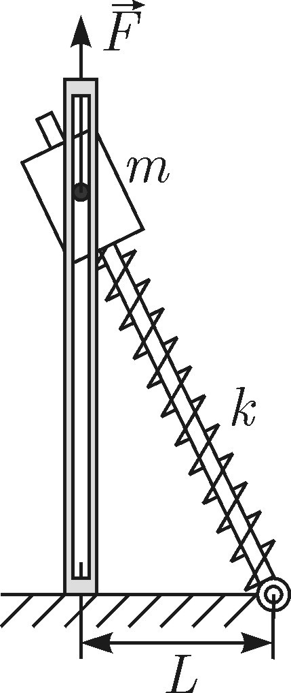
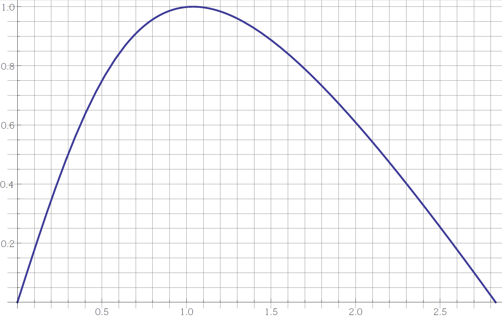

Y14 (2014) — English translation
A part with mass $m$ can move without friction along vertical guides and rotate freely around a horizontal axis perpendicular to the guides and the drawing plane. The part has a through hole into which a smooth light rod is inserted, one end of which is hinged on a horizontal plane at a distance $L$ from the base of the vertical guides (Fig. 1). Between the part and the hinge, a spring attached to them with a stiffness coefficient $k$ is put on the rod. Free spring length $3L$. A light thread is tied to the part, which in the initial state is tensioned by a vertically upward force $F=mg$.
A part with mass $m$ can move without friction along vertical guides and rotate freely around a horizontal axis perpendicular to the guides and the drawing plane. The part has a through hole into which a smooth light rod is inserted, one end of which is hinged on a horizontal plane at a distance $L$ from the base of the vertical guides (Fig. 1). Between the part and the hinge, a spring attached to them with a stiffness coefficient $k$ is put on the rod. Free spring length $3L$. A light thread is tied to the part, which in the initial state is tensioned by a force $F=mg$ directed vertically upward.

If the force $F$ is reduced to zero instantly, then the part can move the rod to a horizontal position with a smaller mass $m_1$. The graph shows the dependence of the projection of the elastic force on the vertical axis, in relative units, on the distance from the load to the horizontal plane.

Source: https://pho.rs/p/3963